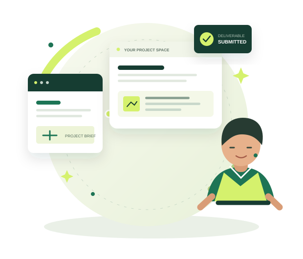

Make real project work more accessible to young people.
Connect young contributors with clearly described opportunities from businesses, so they can take part and build practical experience.
COMPANY / THE BIGGER PICTURE
Funngro connects young people with businesses through project-based opportunities — bringing practical work closer to the next generation.

Milestones and company details are based on Funngro’s public website.
WHY FUNNGRO EXISTS
The first project can be more than a task. It can be a first client brief, a deadline to manage, feedback to use, and a new level of confidence.
Funngro’s public positioning is centred on giving young Indians a practical way to participate in real business projects. It brings two sides together: companies that need work done and young people ready to contribute.
Explore the Teenlancer journeyMISSION & VISION
A plain-language interpretation of Funngro’s published purpose — not a verbatim corporate statement.
Connect young contributors with clearly described opportunities from businesses, so they can take part and build practical experience.
Help young people move from learning about work to participating in it — one project, skill and responsibility at a time.
THE PLATFORM MODEL
Funngro’s model brings business requirements and youth participation into the same project journey.
A business posts a project with the brief, expectations and terms for the work.
Young applicants can explore relevant opportunities and apply to projects that fit.
After selection, the contributor completes the agreed task and submits the required work or proof.
Applying does not guarantee selection or a project. Review the full brief and terms before accepting any opportunity.
WHAT THE MODEL MAKES POSSIBLE
Instead of treating young people only as an audience, Funngro’s model gives them a route to participate in business projects.
Explore opportunitiesWork is organised around a specific brief, deliverable and review process.
Applicants can review project requirements before deciding whether to apply.
Project details and remuneration should be understood before a job is accepted.
COMPANY CONTEXT
Funngro’s official About page records its launch in 2022 and its appearance on Shark Tank India Season 2. The platform is operated by Wishbanc Technologies Private Limited.
Read Funngro’s company storyTAKE THE NEXT STEP
Explore how a young contributor moves from finding a brief to submitting completed work.
Explore the Teen page